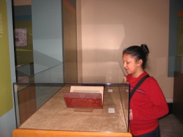
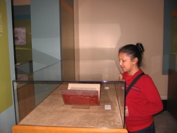

Introduction

This virtual exhibition is based on The Aztecs and the Making of Colonial Mexico, a display of original manuscripts, books, and other materials at the Newberry Library from September 28, 2006 through January 13, 2007. Ellen T. Baird and Cristián Roa-de-la-Carrera, both of the University of Illinois at Chicago, curated the exhibit. The virtual exhibit includes the complete text from the original gallery exhibit and digitized images of many of the manuscripts and books that were displayed.
The Aztecs are well-known as the people who established the great city Tenochtitlan (ca. 1325; present-day Mexico City) and conquered and ruled Mexico from the Pacific Ocean to the Gulf Coast. The Spanish conquistador Hernán Cortés's invasion and conquest of the Aztec empire in 1521 had profound consequences for Mexico's indigenous people.
This exhibition focuses on Colonial Mexico and the intersection and interaction between a Spanish culture of written knowledge and an Aztec culture of oral knowledge and pictorial writing. How did the Aztecs' descendants, the Nahua, respond to the challenge of an alien people, culture, language, and religious beliefs? How did the Nahua preserve their culture, language, identity and history? How did they shape the colonial era?
Drawing upon the Newberry Library's remarkable Mexican holdings, this exhibition presents a wide range of religious, historical, and legal documents (including manuscripts, maps, and printed books) produced by, for, and about the Nahua. These documents tell many stories—of Spanish friars learning Nahuatl, the language of the Nahua, to convert indigenous people to Christianity; of property passed to generations of descendants; of legal battles to retain land ownership and use; of continued and intermingled traditions; and the lives of people who are the ancestors of the Mexicans of today. These stories speak eloquently, and beautifully, of the richness and vigor of indigenous creativity and intellectual production in the colonial period: they highlight the dynamic vitality and resilience of the Nahua descendants of the Aztec throughout the colonial period and beyond.
The Newberry Library is an independent research library, open to the public without charge. It was established in Chicago in 1887 by a bequest of Walter L. Newberry (1804-1868). The core of the Library’s Mexicana holdings were donated in 1911 by trustee Edward E. Ayer (1841-1927).
The Library’s mission is to advance and disseminate knowledge, and to that end it acquires and preserves humanities research materials related primarily to the histories and cultures of western Europe and the Americas. To promote the effective use of all its collections, the Newberry fosters research, teaching, publication, life-long learning, and civic engagement in an atmosphere of free intellectual inquiry. This virtual exhibit is an expression of the Library’s mission.
 
 
Acknowledgments
The Aztecs and the Making of Colonial Mexico grew out of my lifelong fascination with Mexico and its people: the mighty Aztecs whose empire stretched from the Gulf of Mexico to the Pacific, and the colonial Nahua (the Aztec descendants) who survived despite the depredations they suffered. As a scholar, my research has focused on the intersection of indigenous and European culture after the Spanish invasion, as represented in early colonial manuscripts. These documents provide a remarkable visual narrative of Nahua cultural resilience, tenacity, and indomitable strength in the face of almost unimaginable challenges and devastation. As distinguished scholar Louise Burkhart has noted: "It is they [the colonial Nahua] who faced the greatest challenge ever presented to Nahua culture—how to make sense of an invasion by alien beings intent not only on seizing their wealth and territory but on altering their most deeply held religious beliefs. That they survived with a large part of their cultural identity intact is perhaps a more impressive achievement than the feats of the poet-kings, warriors, and scribes so beloved of pre-Conquest enthusiasts."
-Ellen T. Baird, Professor of Art History, University of Illinois at Chicago
The Aztecs and the Making of Colonial Mexico was a venue for examining the influence of the Nahuas on Spanish colonialism in Mexico. The ability of Nahua communities to adapt and refashion themselves in response to the Spanish invasion, to create a space for their knowledge and ideas against the grain of colonization, to infuse a dazzling vitality into their endeavors, and ultimately to shape the world in which they lived was certainly the lure that brought me to the books and documents that so eloquently reveal these stories. My research has focused on the study of the ways in which Spanish colonization has transformed culture. Examining the cultural production of peoples capable of flourishing under these oppressive conditions was a unique opportunity to appreciate the resilience of their culture and to reflect on the insights that their experiences can bring into our world.
-Cristián A. Roa-de-la-Carrera, Associate Professor of Latin American and Peninsular Spanish Literature, University of Illinois at Chicago
Special thanks to Catherine Burdick who researched and wrote the exhibition text for Contemporary Expressions of Nahua Culture and for her assistance in curating the exhibition. Special thanks also go to Michel Oudijk, María Castañeda de la Paz, and Leonardo López Lújan for sharing unpublished research. Their generosity was absolutely essential in untangling the Xochimilco wills and the Teotihuacan (San Francisco Mazapan) map. We would also like to thank the following scholars, without whose research and enlightening scholarship the exhibition text could not have been written: Elizabeth H. Boone; Louise M. Burkhart; Mary L. Clayton; Inga Clendinnen; Davíd Carrasco; Janine Gasco; John Glass; Jorge Klor de Alva; Miguel León-Portilla; James Lockhart; Walter Mignolo; Barbara Mundy; Anthony Pagden; Jeanette F. Peterson; José Rabasa, Donald Robertson; Alan R. Sandstrom; Pamela Effrein Sandstrom; Susan Schroeder; John Frederik Schwaller; and Stephanie Wood. Thanks also to Benjamin Johnson who translated Nahuatl texts for us and last, but not least, to Thomas Cummins who first suggested an exhibit on the rich contributions of the Francisans and the Nahua in colonial Mexico.
The Newberry Library’s outstanding collection of Mexicana (primarily the Edward E. Ayer Collection) afforded us the opportunity to delve deeply into the rich heritage of indigenous people in colonial Mexico. We also want to express our deep appreciation to the Newberry staff who closely worked with us on the exhibit for their extraordinary efforts and support: James Grossman, Vice President for Research and Education; Riva Feshbach, Exhibits Manager; Chester Design Associates; Rachel Bohlmann, Director of Public Programs; Mary Janzen Quinn, Manager of Public Programming; Heather Malec, Director of Public Relations and Communications; Kimberly Zingale, Graphic Designer; Kimberly Ball, Associate Director of Development for Corporate and Foundation Relations; and John Aubrey, Ayer Librarian.
We also want to acknowledge the generous financial support for the exhibit provided by the University of Illinois at Chicago’s Office of the Vice Chancellor for Research Arts, Architecture, and Humanities Project Awards and the Department of Art History.
-Ellen T. Baird and Cristián Roa-de-la-Carrera
Funding for the web-based virtual exhibit, The Aztecs and the Making of Colonial Mexico, is made possible in part by a grant from the Illinois Humanities Council, the Illinois General Assembly, and the National Endowment for the Humanities. The views expressed herein do not necessarily represent those of the Illinois Humanities Council, or the National Endowment for the Humanities, or the Illinois General Assembly. The Chicago Technology Cooperative designed and implemented this site. Their expertise, collegiality, and speed have been crucial to its creation. All photography is by Catherine Gass of the Newberry Library.
The Newberry Library holds in trust for research use original books, images, manuscripts, and documents that illuminate the roots of Mexico and its people. Without three bridge builders from Chicago’s Mexican American community who served as advisors in the early stage of this project, these important historical records would continue to remain largely unknown to this diverse and growing population.
Hector Hernandez, director of Pilsen’s Rudy Lozano branch of the Chicago Public Library, has always been a hospitable and supportive colleague. Rita Arias Jirasek, consultant, educator, and independent scholar, immediately saw the value of this project, and spread the word among members of the community with passionate enthusiasm. Rita also encouraged us to reach out to underserved South Chicago neighborhoods and suburbs, where schools, libraries, and individuals have welcomed new historical knowledge about the Aztecs and Nahua Finally, Carlos Tortolero, President of the National Museum of Mexican Art, challenged us to build bridges across the international border by bringing Nahua guests from Mexico to Chicago to demonstrate in person how vital Nahua people and culture are in Mexico today.
-Mary Janzen Quinn, Manager of Public Programming and Project Director, The Newberry Library